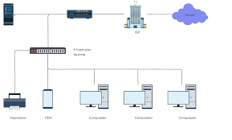

estrutura basica de uma rede de computadores
Uma rede de computadores é formada por diversos elementos essenciais que possibilitam a comunicação eficiente entre dispositivos. Os principais componentes incluem os dispositivos finais (como computadores, smartphones e servidores), os meios de transmissão (cabos Ethernet, fibra óptica ou conexões sem fio), e os dispositivos de interconexão, como roteadores e switches, que organizam e direcionam o tráfego de dados na rede.
Além disso, uma rede depende de protocolos de comunicação, como o TCP/IP, que padronizam a troca de informações, garantindo que os dispositivos se entendam. Serviços como DNS e DHCP contribuem para a operação eficiente da rede, enquanto medidas de segurança, como firewalls e criptografia, protegem os dados contra acessos não autorizados. Juntos, esses elementos formam a estrutura fundamental de uma rede, permitindo conectividade confiável e segura. Quer que eu aprofunde mais algum aspecto?

- Dispositivos Finais – São os computadores, smartphones, servidores e outros equipamentos que utilizam a rede para enviar e receber dados.
- Meios de Transmissão – Cabos de rede (como fibra óptica ou Ethernet) e conexões sem fio (Wi-Fi e Bluetooth) que viabilizam o tráfego de informações.
- Dispositivos de Interconexão – Incluem roteadores, switches e hubs, que gerenciam o tráfego de dados entre os dispositivos da rede.
- Protocolo de Comunicação – Conjunto de regras e padrões (como TCP/IP) que garantem que os dispositivos possam trocar informações de maneira compreensível e organizada.
- Serviços de Rede – Recursos como DNS (para tradução de endereços), DHCP (para configuração automática de IPs) e servidores web ou de arquivos.
- Segurança e Controle – Ferramentas como firewalls, criptografia e sistemas de autenticação que protegem os dados contra acessos não autorizados.
historia da evolução das tecnologias de redes de computadores
as redes de computadores hojeas redes de computadores hoje